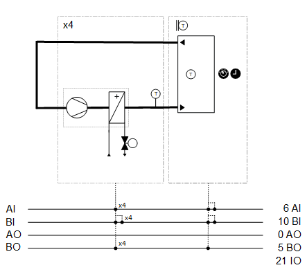
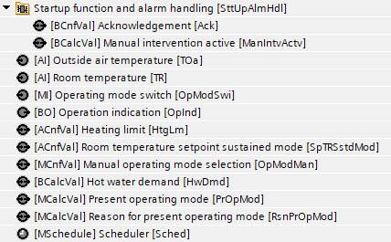
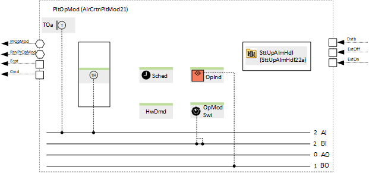
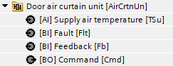
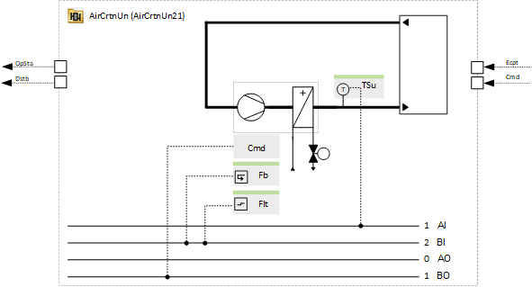

[AirCurt21x] Door air curtain (external control)
Name: [AirCurt21x] Door air curtain (external control)
Library hierarchy: Plants
Plant operating modes:
- Off
- On
Plant diagram

Main functions | Main components |
|---|---|
|
|
Program blocks
Plant operating mode | |
[AirCrtnPltMod21] Plant operating mode determination for door air curtain heating | |
 |  |
Door air curtain unit 1 | |
 |  |
Door air curtain unit 2 (Optional) | |
Door air curtain unit 3 (Optional) | |
Door air curtain unit 4 (Optional) | |